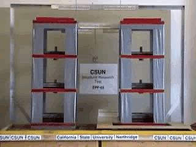
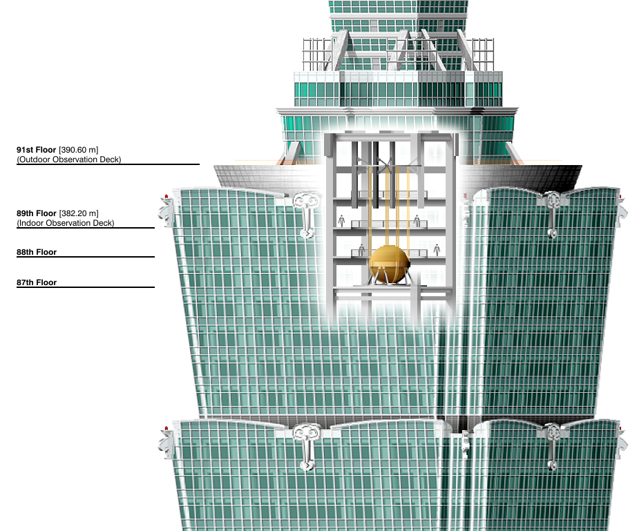
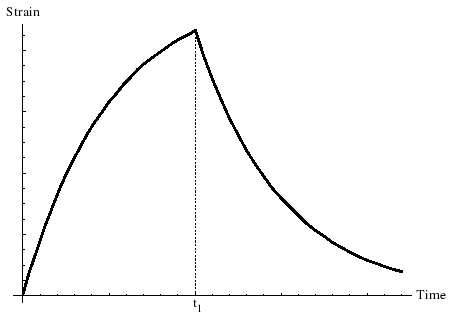

RC stands for “reinforced concrete”, meaning the construction of the building is mostly based on concrete and reinforced with steel. Most of the buildings in Taiwan already use this.
Base isolation involves the separation of the building from the base, which introduces a decoupling effect to mitigate the impact. Here’s an example of base isolation vs no base isolation.
 Valentin Shustov - Own work, CC BY-SA 3.0, LinkMost buildings in Taiwan built after 1999 should already have this.
Damping is essentially the loss of energy in oscillating systems. In other words, it reduces the shaking a building experiences during an earthquake, and is essential in mitigating earthquake impact. Here’s how it works:
Imagine a spring with a block attached. Here’s what it would look like with no damping:
Here’s what it would look like with underdamped, overdamped, and critically damped damping:
Taipei 101 is a great example of damping to survive during earthquakes. Despite being 1667 feet tall, it is able to withstand high forces from typhoons and earthquakes. This is because it has a giant mass tuned damper:

By Armand du Plessis - Own work, CC BY 3.0, Link
This damper is located on the top floors.
By Someformofhuman - Own work, CC BY-SA 4.0, Link
Another notable type of damper is called the viscoelastic damper. It is one of the cheapest dampers for buildings, and it’s model (shown below Kelvin Voigt) consists of a spring and a dashpot in parallel. Here’s a strain vs time graph of this damper:
Public Domain, Link
Essentially, it is great for damping and it also minimizes deformation.